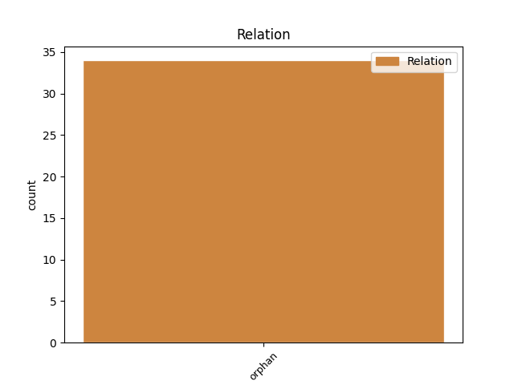
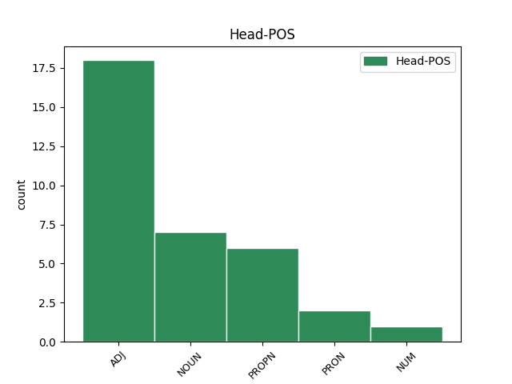
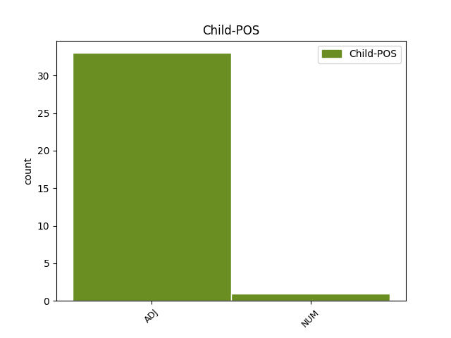

Distribution of features within this leaf



Agreement Rules sorted by frequency.
- When the dependent token is the orphan(orphan) of the head token, and the head token is ADJ and the dependent token is ADJ.
1 сего _ _ _ _ 0 _ _ _
2 бо _ _ _ _ 0 _ _ _
3 нынѣ _ _ _ _ 0 _ _ _
4 сташа _ _ _ _ 0 _ _ _
5 стязи _ _ _ _ 0 _ _ _
6 Рюриковы _ _ _ _ 0 _ _ _
7 а _ _ _ _ 0 _ _ _
8 друзіи другыи ADJ A- Case=Nom|Degree=Pos|Gender=Masc|Number=Plur|Strength=Weak 0 _ _ _
9 Давыдовы давыдовъ ADJ A- Case=Nom|Degree=Pos|Gender=Masc|Number=Plur|Strength=Strong 8 orphan _ ref=166
1 кнѧзь _ _ _ _ 0 _ _ _
2 же _ _ _ _ 0 _ _ _
3 ѡндрѣи _ _ _ _ 0 _ _ _
4 вороти _ _ _ _ 0 _ _ _
5 сѧ _ _ _ _ 0 _ _ _
6 с _ _ _ _ 0 _ _ _
7 побѣдою _ _ _ _ 0 _ _ _
8 видѣвъ _ _ _ _ 0 _ _ _
9 поганыꙗ _ _ _ _ 0 _ _ _
10 болгары _ _ _ _ 0 _ _ _
11 избиты _ _ _ _ 0 _ _ _
12 а _ _ _ _ 0 _ _ _
13 свою _ _ _ _ 0 _ _ _
14 дружину дружина NOUN Nb Case=Acc|Gender=Fem|Number=Sing 0 _ _ _
15 всю _ _ _ _ 0 _ _ _
16 сдраву съдравыи ADJ A- Case=Acc|Degree=Pos|Gender=Fem|Number=Sing|Strength=Strong 14 orphan _ ref=true
1 егда _ _ _ _ 0 _ _ _
2 кто _ _ _ _ 0 _ _ _
3 вѣсть _ _ _ _ 0 _ _ _
4 кто _ _ _ _ 0 _ _ _
5 ѡдолѣеть _ _ _ _ 0 _ _ _
6 мы мы PRON Pp Case=Nom|Gender=Masc|Number=Plur|Person=1|PronType=Prs 0 _ _ _
7 ли _ _ _ _ 0 _ _ _
8 ѡнѣ онъ ADJ Pd Case=Nom|Gender=Masc|Number=Plur 6 orphan _ ref=46.4
9 ли _ _ _ _ 0 _ _ _
1 въ _ _ _ _ 0 _ _ _
2 аѳрикии _ _ _ _ 0 _ _ _
3 же _ _ _ _ 0 _ _ _
4 в҃ _ _ _ _ 0 _ _ _
5 дѣтища _ _ _ _ 0 _ _ _
6 родиста _ _ _ _ 0 _ _ _
7 сѧ _ _ _ _ 0 _ _ _
8 единъ единъ NUM Ma Case=Nom|Gender=Masc|Number=Sing 0 _ _ _
9 ѡ _ _ _ _ 0 _ _ _
10 д҃.хъ _ _ _ _ 0 _ _ _
11 ногахъ _ _ _ _ 0 _ _ _
12 а _ _ _ _ 0 _ _ _
13 другыи другыи ADJ A- Case=Nom|Degree=Pos|Gender=Masc|Number=Sing|Strength=Weak 8 orphan _ ref=165.16
14 ѡ _ _ _ _ 0 _ _ _
15 двою _ _ _ _ 0 _ _ _
16 главу _ _ _ _ 0 _ _ _
Disagree Examples:
1 и _ _ _ _ 0 _ _ _
2 раздая _ _ _ _ 0 _ _ _
3 мужемъ _ _ _ _ 0 _ _ _
4 своимъ _ _ _ _ 0 _ _ _
5 грады _ _ _ _ 0 _ _ _
6 ѡвому овъ ADJ Px Case=Dat|Gender=Masc|Number=Sing 7 orphan _ ref=20.13
7 полотескъ полотьскъ PROPN Ne Case=Acc|Gender=Masc|Number=Sing 0 _ _ _
8 ѡвому _ _ _ _ 0 _ _ _
9 ростовъ _ _ _ _ 0 _ _ _
10 другому _ _ _ _ 0 _ _ _
11 бѣлоѡзеро _ _ _ _ 0 _ _ _
1 и _ _ _ _ 0 _ _ _
2 раздая _ _ _ _ 0 _ _ _
3 мужемъ _ _ _ _ 0 _ _ _
4 своимъ _ _ _ _ 0 _ _ _
5 грады _ _ _ _ 0 _ _ _
6 ѡвому _ _ _ _ 0 _ _ _
7 полотескъ _ _ _ _ 0 _ _ _
8 ѡвому овъ ADJ Px Case=Dat|Gender=Masc|Number=Sing 9 orphan _ ref=20.14
9 ростовъ ростовъ PROPN Ne Case=Acc|Gender=Masc|Number=Sing 0 _ _ _
10 другому _ _ _ _ 0 _ _ _
11 бѣлоѡзеро _ _ _ _ 0 _ _ _
1 и _ _ _ _ 0 _ _ _
2 раздая _ _ _ _ 0 _ _ _
3 мужемъ _ _ _ _ 0 _ _ _
4 своимъ _ _ _ _ 0 _ _ _
5 грады _ _ _ _ 0 _ _ _
6 ѡвому _ _ _ _ 0 _ _ _
7 полотескъ _ _ _ _ 0 _ _ _
8 ѡвому _ _ _ _ 0 _ _ _
9 ростовъ _ _ _ _ 0 _ _ _
10 другому другыи ADJ A- Case=Dat|Degree=Pos|Gender=Masc|Number=Sing|Strength=Weak 11 orphan _ ref=20.14
11 бѣлоѡзеро бѣлоозеро PROPN Ne Case=Acc|Gender=Neut|Number=Sing 0 _ _ _
1 и _ _ _ _ 0 _ _ _
2 въставъ _ _ _ _ 0 _ _ _
3 и _ _ _ _ 0 _ _ _
4 ѿ _ _ _ _ 0 _ _ _
5 нощи _ _ _ _ 0 _ _ _
6 и _ _ _ _ 0 _ _ _
7 даеть _ _ _ _ 0 _ _ _
8 брашно _ _ _ _ 0 _ _ _
9 ему _ _ _ _ 0 _ _ _
10 и _ _ _ _ 0 _ _ _
11 дѣла дѣло NOUN Nb Case=Acc|Gender=Neut|Number=Plur 0 _ _ _
12 равнымъ равьныи ADJ A- Case=Dat|Degree=Pos|Gender=Masc|Number=Plur|Strength=Weak 11 orphan _ ref=81.4
1 выпусти _ _ _ _ 0 _ _ _
2 ты _ _ _ _ 0 _ _ _
3 свои _ _ _ _ 0 _ _ _
4 мужь _ _ _ _ 0 _ _ _
5 а _ _ _ _ 0 _ _ _
6 я я PRON Pp Case=Nom|Gender=Masc|Number=Sing|Person=1|PronType=Prs 0 _ _ _
7 свои свои ADJ Pt Case=Acc|Gender=Masc|Number=Sing|Person=3|Poss=Yes|Reflex=Yes 6 orphan _ ref=122.17
8 да _ _ _ _ 0 _ _ _
9 сѧ _ _ _ _ 0 _ _ _
10 борета _ _ _ _ 0 _ _ _